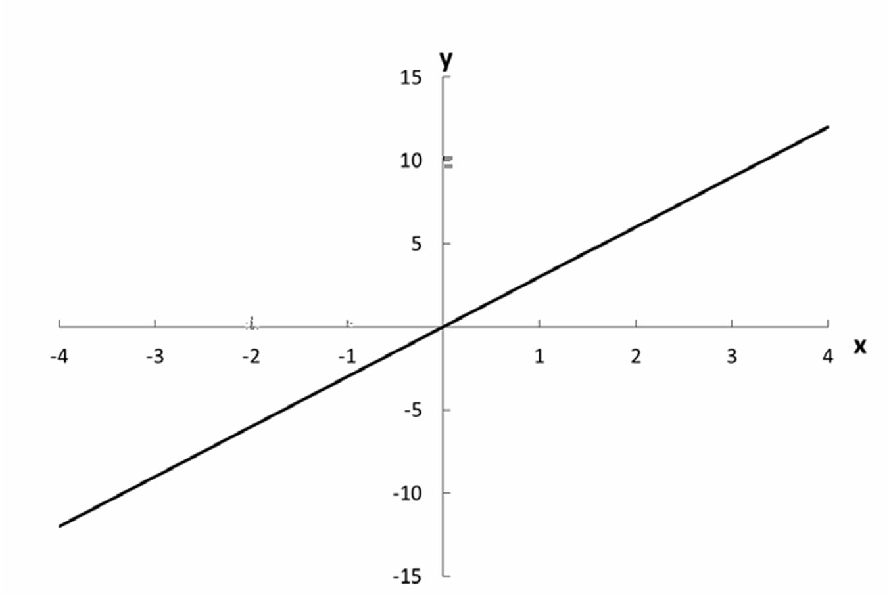
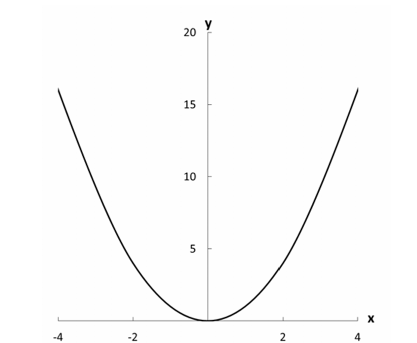
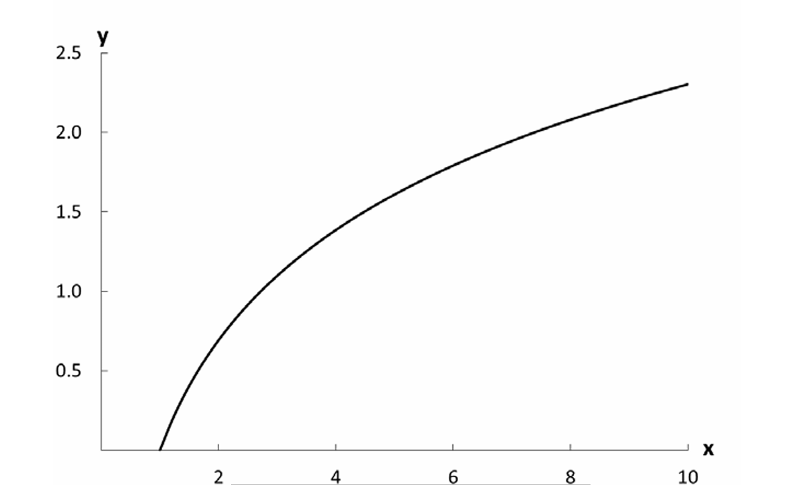

EPPS Math and Coding Camp
Functions and Relations

3.1 FUNCTIONS
- A relation that assigns one element of the range to each element of the domain is a function.
- One that assigns a subset of the range to each element of the domain is a correspondence.
3.1.1 Equations
- implicit notation \[ y=f(x) \]
- explicit notation
Example: \(y=3x\)
\(y\) is a function of \(x\);
\(x\) is the argument of the function
3.1.2 Graphs

3.1.3 Some Properties of Functions
- We define the function \(f\) as \(f(x) : A \rightarrow B\). This is often read as “\(f\) maps \(A\) into \(B\).” \(A\) here is the domain of the function, \(B\) is known as the codomain.
- The set of all values actually reached by running each \(x \in A\) through \(f\) is known as the image, or range, and it is necessarily a subset of B.
- function composition: \(g \circ f(x)\) or \(g(f(x))\)
3.1.3 Function Composition
- \(g \circ f(x) = g(f(x))\) is read as g of f of x
- Example:
- if \(f(n) = 2n , g(n) = n^3\)
- then \(g(f(n)) = (2n)^3 = 8n^3\)
- and \(f(g(n)) = 2(n^3) = 2n^3\)
- Hence \(g(f(n)) \neq f(g(n)))\).
Types of Functions
Surjective (Onto)
- Every value in the codomain is produced by some value in the domain.
Injective (One-to-One)
- Each value in the range comes from only one value in the domain.
Bijective
- Both injective and surjective → function is invertible.
Identity and Inverse Functions
Identity Function
- Where both domain and co-domain are identical. It maps elements to themselves. \(f(x) = x, f(x): A \rightarrow A\)
Inverse function:
If $f(x) = 2x + 3 $:Put y in place of f(x) $ y = 2x + 3 $
Switch x and y $ x = 2y + 3 $
solve for y
\[ y = \frac{x - 3}{2} \]
replace y with \(f^{-1}(y)\), such that
\[ f^{-1}(y) = \frac{x - 3}{2} \]
- \[ f(f^{-1}(x)) = f(\frac{x - 3}{2}) = x \]
- \[ f^{-1}(f(x)) = f^{-1}(f(2x + 3)) = x \]
3.1.3.1 Identity and Inverse Functions
| Term | Meaning |
|---|---|
| Identity function | Elements in domain are mapped to identical elements in codomain |
| Inverse function | Function that when composed with original function returns identity function |
| Surjective (onto) | Every value in codomain produced by value in domain |
| Injective (one-to-one) | Each value in range comes from only one value in domain |
| Bijective (invertible) | Both surjective and injective; function has an inverse |
Monotonic Functions
- Increasing: A function is increasing on interval I if \[ f(b)\geq f(a)\ when\ b > a\ where\ a,b \in I \]
- Strictly Increasing: \[ f(b) > f(a) \ when\ b > a\ where\ a,b \in I \]
- Decreasing: A function is decreasing on interval I if \[ f(b) \geq f(a) when\ b < a\ where\ a,b \in I \]
- Strictly Decreasing: \[ f(b) < f(a)\ when\ b > a\ where\ a,b \in I \]
3.1.3.2 Monotonic Functions
| Term | Meaning |
|---|---|
| Increasing | Function increases on subset of domain |
| Decreasing | Function decreases on subset of domain |
| Strictly increasing | Function always increases on subset of domain |
| Strictly decreasing | Function always decreases on subset of domain |
| Weakly increasing | Function does not decrease on subset of domain |
| Weakly decreasing | Function does not increase on subset of domain |
| (Strict) monotonicity | Order preservation; function (strictly) increasing over domain |
3.2.1 The Linear Equation (Affine Function)
- \(y=a+bx\)
- A linear equation is an equation that contains only terms of order \(x^1\) and \(x^0=1\). In other words, only \(x\) and \(1\), multiplied by constants, may appear on the right-hand side (RHS) of a linear equation.
3.2.2 Linear Functions
- Additivity: \(f(x_1+x_2)=f(x_1)+f(x_2)\)
- Scaling (aka homogeneity):\(f(ax)=af(x), \text{for all a}\).
- Linear functions are not affine functions, e.g., they do not permit a translation(the \(x^0\) term).
3.2.3 Nonlinear Functions:
3.2.3.2 Quadratic Functions
\[ y=\alpha +\beta_1x+\beta_2x^2 \]

3.2.3.4 Logarithms (Properties of log)
- Logarithms: \(log_a x\)
- \(a^{log_a x}=x\)
- \(log_a a^x=x\)
- if \(log_a x=b\), then \(a^{log_ax}=a^b\), thus \(x=a^b\)
- The base for the natural log is the \(e \approx 2.7183\)

Example:
If you suspect that education increases the probability of voting in national elections, but that each additional year of education has a smaller impact on the probability of voting than the preceding year’s, then the log functions are good candidates to represent that conjecture.
if \(p_v\) is “probability of voting” and \(ed\) is “years of education”:
- then \(p_v= \alpha + \beta ed\) specifies a linear relationship where an additional year of education has the same impact on the probability of voting regardless of how many years of education one has had.
- \(p_v= \alpha + \beta ed^2\) represents the claim that the impact of education on the probability of voting rises the more educated one becomes.
- We transform the relationship between \(p_v\) and \(ed\) from a linear one to a nonlinear one where the impact of an additional year of education declines the more educated one becomes: \(p_v= \alpha + \beta (\ln(ed))\)
- Algebraic rules for logs
\[ \ln(x_1 \cdot x_2)=\ln(x_1)+\ln(x_2) \text{, for }x_1,x_2>0 \]
\[ \ln \frac{x_1}{x_2}=\ln(x_1)-\ln(x_2) \text{, for }x_1,x_2>0 \]
\[ \ln(x_1 + x_2) \neq \ln(x_1)+\ln(l_2) \text{, for }x_1,x_2>0 \]
\[ \ln(x_1 - x_2) \neq \ln(x_1)-\ln(lx) \text{, for }x_1,x_2>0 \]
\[ \ln(x^b)=b\ln(x) \text{, for } x>0 \]
\[ \ln(1+x) \approx x \text{, for } x>0 \text{ and } x \approx 0 \]
Problems
Problem 1
If the domain of the function \(y = 5 + 3x\) is the set \(\{x \mid 1 \leq x \leq 4\}\), find the range of the function and express it as a set.
Problem 2
For the function \(y = -x^2\), if the domain is the set of all nonnegative real numbers, what will its range be?
Problem 3
Graph the functions:
\(y = -x^2 + 5x - 2\)
\(y = x^2 + 5x - 2\)
with the set of values \(-5 \leq x \leq 5\) as the domain. It is well known that the sign of the coefficient of the \(x^2\) term determines whether the graph of a quadratic function will have a “hill” or a “valley.” On the basis of the present problem, which sign is associated with the hill? Supply an intuitive explanation for this.
Problem 4
Graph the function \(y = \frac{36}{x}\), assuming that \(x\) and \(y\) can take positive values only. Next, suppose that both variables can take negative values as well; how must the graph be modified to reflect this change in assumption?
Problem 5
Simplify \(\frac{x^3}{x^{-3}}\).
Problem 6
Show that \(x^{m/n} = \sqrt[n]{x^m} = (\sqrt[n]{x})^m\).
Problem 7
Simplify \(h(x) = g(f(x))\), where \(f(x) = x^2 + 2\) and \(g(x) = px - 4\).
Problem 8
Simplify \(h(x) = f(g(x))\) with the same \(f\) and \(g\). Is it the same as your previous answer?
Any Questions?